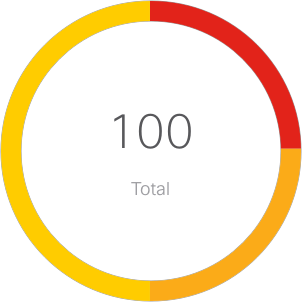
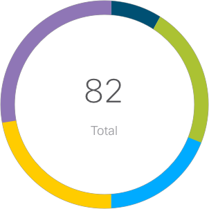

Network Insights
Dashboard
Flow Analytics
Event Analytics
Fabric Utilization
Protocol Statistics
Resource Analytics
Open Device Configuration
Configuration Guides
Time Range
Aug 31 2018, 9:16 AM - Aug 31, 10:16 AM
One
Two
Three
Fabric
Fabric 1
One
Two
Three
Dashboard
Fabric Issues by Severity

25
Critical
25
Major
25
Minor
50
Minor
Anomalies by
Type
Severity

CPU & Memory
(3)
Message Queue
(20)
Fabric Utilization
(18)
Statistics
(14)
Flow
(27)
Fabric Issues by Severity
Graph
Anomalies by Type
Graph